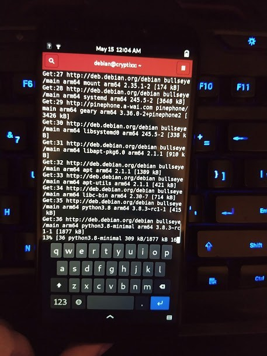

your number one source for linux phone news
~ Community | News | Operating Systems | Software | Devices | Contact Us | About Us ~
If you are a fan of using Debian on your desktop machine, laptop, or even your server, then you’re going to feel right at home with Mobian. Mobian is a "Mobile Debian" and is essentially Debian scaled down to a Phosh overlay.
Currently, Mobian is based on Debian Bullseye. Built by developer a-wai and a small team of contributors, it is fast becoming one of the most usable Linux mobile distributions for the PinePhone.
The Mobian team doesn't plan to stop with the PinePhone either - they also eventually have plans to port the distro to Purism's Librem 5.
Ready to try everything you love about pure Debian on your PinePhone? Scoop up the latest image from the link below, extract it, flash it to an SD card, and enjoy!